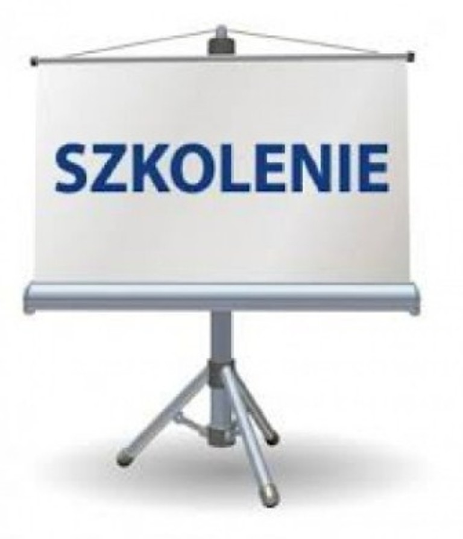

Szkolenie: Nowy ustrój szkolny. Zmiany dotyczące szkół podstawowych i gimanzjów.
Stowarzyszenie „Aglomeracja Zielonogórska” we współpracy z Fundacją Rozwoju Demokracji Lokalnej Ośrodek Regionalny w Zielonej Górze, zapraszają przedstawicieli samorządów z Województwa Lubuskiego na szkolenie:
Nowy ustrój szkolny. Zmiany dotyczące szkół podstawowych i gimnazjów
Miejsce: Zielona Góra (Park Naukowo-Technologiczny UZ - Willa, ul. Nowy Kisielin -A.Syrkiewicza 6
Termin: 31.03.2017r. (piątek) godz. 10:00
- Zmiany w ustroju szkolnym. Nowy ustrój szkolny wraz z rozwiązaniami dotyczącymi przekształcenia, likwidowania, zakładania i prowadzenia szkół publicznych.
- Ustawa z dnia 14 grudnia 2016 roku Prawo oświatowe - wdrażanie i wykonanie zmiany.
- Działania jednostek samorządu terytorialnego w zakresie planu sieci szkół.
- Zadania samorządu w zakresie wprowadzania zmian w ustroju szkolnym - podejmowanie przez organy stanowiące JST uchwał intencyjnych i normatywnych w zakresie sieci szkół.
- Podejmowanie uchwał potwierdzających przekształcenia szkół. Akty założycielskie, statuty, itp.
- Zmiany w prawie pracy. Status prawny pracowników oświaty (nauczycieli i pracowników niepedagogicznych) w związku z nowym ustrojem. Projektowane zmiany w prawie pracy.
- Status prawny dyrektorów jednostek oświatowych.
- Wpływ reformy na inne zadania oświatowe realizowane przez samorząd
- Zmiany ustroju szkolnego i ich konsekwencje dla samorządu.
Zakres tematyczny szkolenia:
Prelegent: Pan Tadeusz Konarski -prawnik, doświadczony wykładowca, ekspert w zakresie prawa oświatowego oraz zarządzania edukacją, autor wielu publikacji i trener szkoleń dedykowanych pracownikom administracji samorządowej oraz dyrektorom jednostek oświatowych. Autor nowelizacji przepisów ustawy karta nauczyciela, Prowadzi również zajęcia ze studentami na uczelni wyższej.
Zgłoszenia na szkolenie przyjmowane są do dnia 23.03.2017r. na adres mailowy: biuro@aglomeracjazielonogorska.pl lub pocztą na adres: Stowarzyszenie „Aglomeracja Zielonogórska”, ul. Nowy Kisielin - A. Syrkiewicza 6, 66-002 Zielona Góra